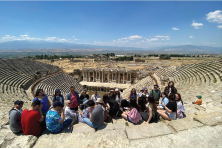
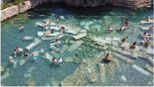
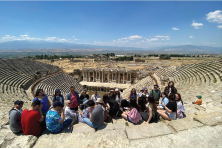
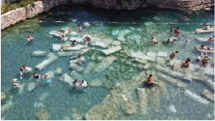
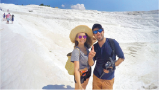
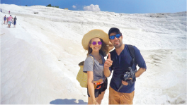

Blog
Güneşin ilk ışıklarıyla havalanan sıcak hava balonlarından Pamukkale’nin uçsuz bucaksız beyazlığını izleyerek başladığınız bu masalsı gün, ayaklarınız yere bastığında tarihin ve doğanın kucağında devam ediyor. UNESCO Dünya Mirası Listesi'ndeki Hierapolis Antik Kenti'nin görkemli tiyatrosunda Roma döneminin izlerini sürdükten hemen sonra, binlerce yıldır akan termal suların şekillendirdiği beyaz travertenlerde çıplak ayakla yürümenin huzurunu yaşayacaksınız; bu benzersiz deneyimi taçlandırmanın en büyüleyici yolu ise yüzyıllar önce suyun içine devrilmiş antik sütunların arasında, efsanevi Kleopatra Havuzu’nun 36 derecelik şifalı sularında yüzerek adeta zamanın içinde kaybolmaktır.
 



 
